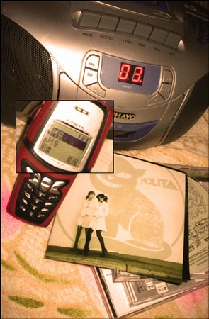

2006-01-23
最后一个假期了，可能 早早地回来 虽然也没事干，但还是尽量多在妈妈身边待着 回来后天气也一直不好，都是阴天，真不给我面子 今天出来上个网吧，上着上着怎么觉得那么冷？ 抬头一看，竟然上面的风扇在疯狂地转着 天啊！！！
2006年1月25日
我们很牛 从没有一点头绪 到 最后起了一个这样好的名字 ：） 实在不得不称赞一下咱啊 而且在过程中还认识了 多依河 以及 多依树村 哈 实在有意思 虽然不能说会去云南生活 但是我的确越来越想去那看看了 。。。。 06年1月25日起 你有名字了 ———— 晓禾依树
2006年2月8日
回家将近一个月了 在朋友基本都上班了的年头 算算好像一个月的假期……的确很久了 和往年一样 假期快结束的时候回望假期……我还是什么都没有干 我和我妹说：假期什么都不干才是正事 事实上这话都不能使自己安心 家里真是一个待得很舒服的地方 舒服到我什么都不想做了 就这样待着 待着 待着 待着 实在没事的时候 人就会开始回忆 坐在屋子里回忆以前的事 然后决定翻翻以前的信件，照片，贺卡…… 听着以前夜里习惯听的歌 有时候突然从回忆的思绪中挣脱出来时 我仿佛还是当年中学时代的那个我 那个应该是时候上床睡一觉 明天6点多起来骑车上学的我 那些年的事情仿佛就是昨天 身边的书桌，书柜都没有变 没有镜子 似乎我也没有变……

2006年2月15日
要走了 真的要走了 昨晚睡在床上 这张熟悉的床上 真的和以前感觉很像 可是我知道我起床后 不用去学校了 也见不到以前的同学和朋友 躺在床上 过去的故事仿佛就在旁边飞快地重演 唰 唰 唰 那些面孔飞逝而过 只有我静静地躺在床上…… 我知道我要走了 明天吃完妈妈的午饭 然后让爸爸妈妈送走
2006年3月14日
终于在毕业前的三个月的时候，学校给我们通网了 虽然有些晚，但已经不能说什么了 抓紧一切时间好好感受一下互连网吧 已经厌倦了那种匆匆忙忙拨号上网，迅速点开一堆网页，然后断线的日子了 连安静的浏览的心情都没有，就象广东大街上“走鬼”的那些小商贩 抱着一壶热水，边喝边看网页，边下载，边听歌…多惬意
2006年3月31日
上周末 妈妈发短信来说家里的电脑不知道怎么给整出问题了 突然间心里好象很着急 于是给家打了一电话 给妈妈说了很多应该怎么弄 妈妈听着听着 说不懂 没有办法 只能等他们自己找人来修修了 也许是在电脑前无所事事的时间太长了吧 心情有点急噪起来 和那个暑假一样 打完电话后 感觉烦躁 第二天 一起床 将近中午的时候收到妈妈的短信 说问题已经解决了 短信写得那么可爱 我一时就笑了出来 笑完之后 竟有些伤感 我想起《千里走单骑》有次的电视宣传节目上 最后放的宣传片 有那么一段话 排比着说的 意思大概如： “我的孩子 如果有一天我走不动了 希望你扶着我 慢慢的 有耐心的扶着我走走 不要怪我太笨拙 你可知道 你小时候我扶你学走路的时候 费了多少时间和耐心。。。” 妈妈已经很聪明能干了 也很可爱 我没有理由怪他们学得慢 妈妈也很可爱 我能想象那种单纯的快乐在她脸上激起最幸福的笑容的样子 “昨天电脑出点问题 卡住了 去找蔡玮碰巧她去北海旅游 后来无意间不知碰带哪就结决。近来好吗保重身体哦” “桌面图标我把它显示出来了 好高兴哟 还有网址页面已连接了不能出来是不是用同样的办法搞出来” “电脑正常了 可以上网了 我按你的讲法弹出来的 好了 请放心 拜拜”
2006年4月5日
好累 是脑子累 一天都坐在电脑前面 十几个小时 边听歌 边下载 边工作 中间还时不时地点开MSN 看看依依那个可爱的头像 如果她不回答 我会给她发闪屏 或 动漫 作为宣泄 虽然说在ISAR做了将近两年的界面设计 但自己亲手设计界面还真是从前几个月才开始 没有什么特别满意的作品 技术上的积累还不够 而眼下这个又是大公司 都不知道我最后能拿出什么样的方案给他 不过我还真的是用心做了 哪怕最后只能作为我的一个作品 就这样断断续续做了一天 实在头晕 想想明天不用去我公司 而接下来那个活的资料也没有发过来 其实明天还是可以稍微悠闲点 继续干这个的 于是停下来听听歌 看看网页 也能够安心 待在电脑前时间过长的人 心情会变得急躁 于是把椅子拉远一点 以便我能写完这个日志
2006年10月16日
苦学了将近三个星期的3DMAX 终于今天头问我：HOW IS PROGRESS GOING？ 没有办法 只好实话实说： 经过最近对3DMAX的学习，我感觉我快要见到马克思——他老人家了。当然最后是不会这样回答我们主管的，对马克思的学习还要继续，只是希望我们头能先给我换个活缓缓。毕竟整天和马克思打交道，对于我这个普通人来说，好有压力啊
2006年10月17日
上周六 MSRA几位学生在wangyi家小聚 进门突然看见久违的Mentor也在 楞了一下 然后Mentor很合时宜地对我说了句： 小乐 不用怕， 我不会再骂你的啦。 -_-! 一回想起那段日子 就非常有沧桑感。 那天 大家都挺好。 祝愿我们。